TRAYECTORIA CIENTÍFICA
David Gómez Candón
Investigador ARAID · Estación Experimental de Aula Dei (EEAD-CSIC)
Departamento de Genética y Producción Vegetal
Investigador especializado en teledetección, agricultura digital y fenotipado de cultivos mediante drones, sensores remotos e inteligencia artificial para una agricultura más eficiente y sostenible.
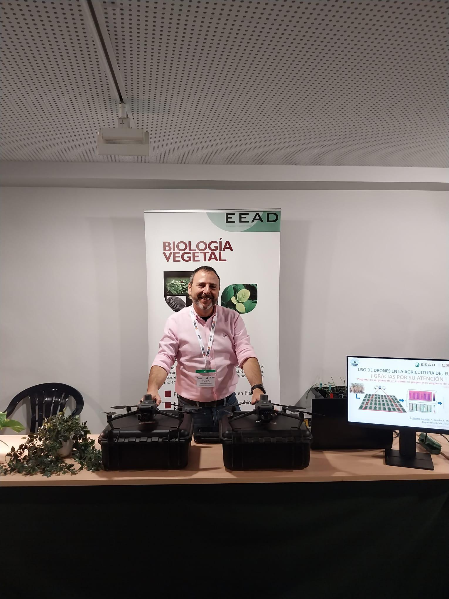
Perfil profesional
David Gómez Candón desarrolla su actividad investigadora en la Estación Experimental de Aula Dei (EEAD-CSIC), donde lidera investigaciones en agricultura de precisión, teledetección y fenotipado de cultivos mediante drones, sensores remotos e imágenes multiespectrales y térmicas.
Su trabajo integra inteligencia artificial, análisis avanzado de imágenes y modelos biofísicos para mejorar la monitorización de los cultivos, optimizar el uso del agua y contribuir a una agricultura más eficiente y sostenible.
A lo largo de su trayectoria ha trabajado en centros de investigación de España, Francia y Portugal y es responsable del Servicio Científico-Técnico de Teledetección en Agricultura (TeA).
Trayectoria científica
Una carrera internacional construida desde la investigación, la innovación tecnológica y la transferencia de conocimiento.
IAS-CSIC
Contrato predoctoral y tesis doctoral.
Montpellier SupAgro
Investigación en cultivos y sensores.
INRAE
Fenotipado e imágenes térmicas.
Universidad de Lisboa
Estancia científica internacional.
IRTA Fruitcentre
Agricultura de precisión y riego.
EEAD-CSIC
Investigador ARAID y responsable TeA.
Centros de investigación
Instituciones donde ha desarrollado su formación y carrera investigadora.
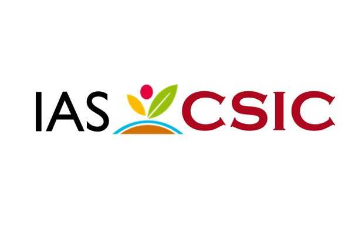
IAS-CSIC
España · 2008–2013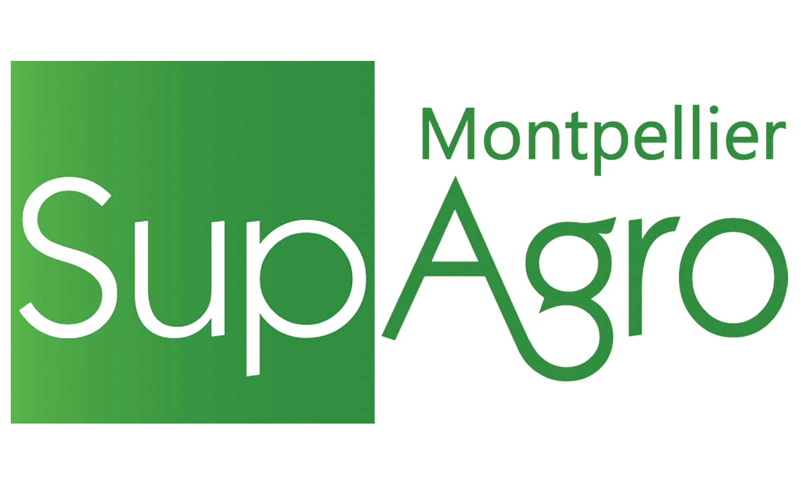
Montpellier SupAgro
Francia · 2013–2014INRAE
Francia · 2014–2016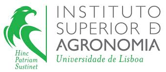
Universidad de Lisboa
Portugal · 2017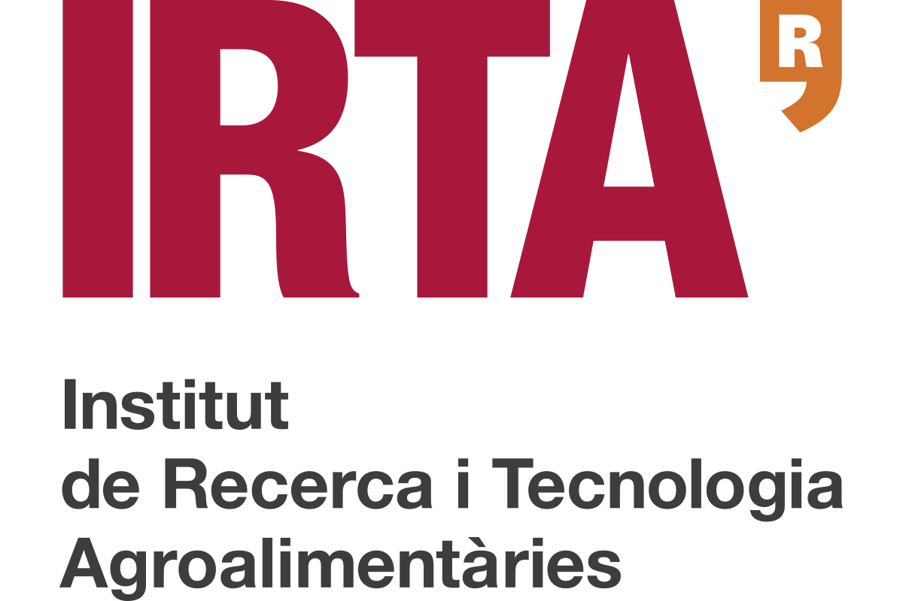
IRTA Fruitcentre
España · 2019–2023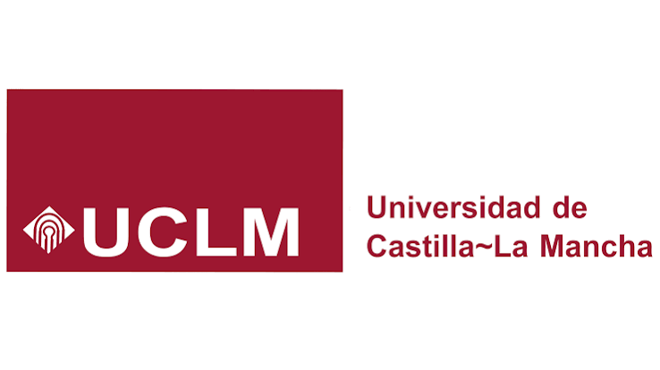
Universidad de Castilla-La Mancha
España · 2023–2024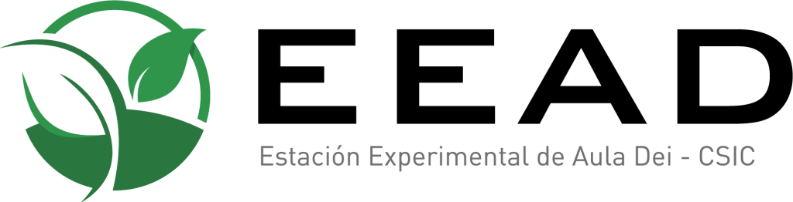
EEAD-CSIC
España · ActualidadÁreas de especialización
Proyectos de investigación destacados
Participación en proyectos competitivos nacionales e internacionales.
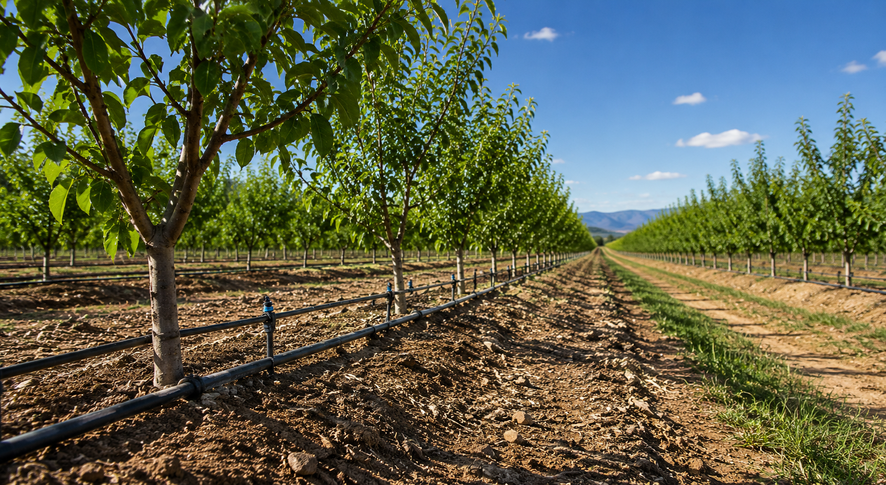
MERCEDES
H2020 · 2019–2023Desarrollo de tecnologías de teledetección y fenotipado para una agricultura sostenible y resiliente.
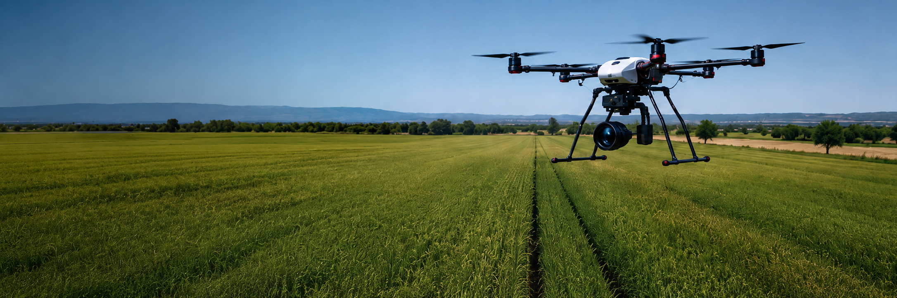
MedGreenSOS
PRIMA · 2020–2023Herramientas de apoyo a la decisión para una gestión sostenible del agua en agricultura mediterránea.
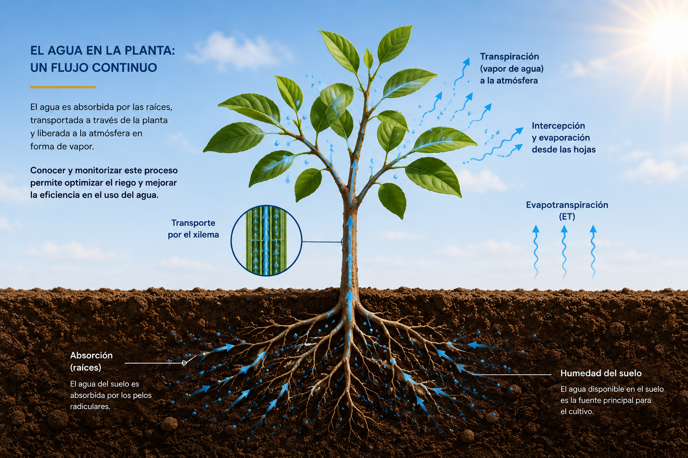
ACCWA
PRIMA · 2021–2024Adaptación al cambio climático en la agricultura mediterránea mediante gestión inteligente del agua.
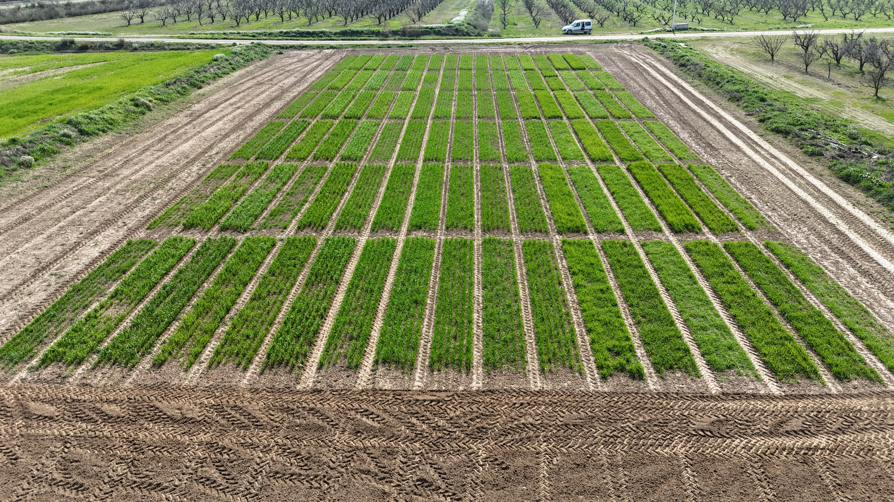
INVITE
PRIMA · 2022–2025Plataforma de innovación para una agricultura sostenible en el Mediterráneo.
CURRÍCULUM VITAE
Descargar currículum
Consulta la trayectoria completa
Descarga el currículum vitae de David Gómez Candón en formato PDF.